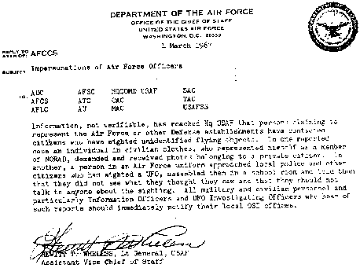

Le , Rex E. Heflin, roule au volant de son camion Ford le long de
l'autoroute de Santa Ana (Los Angeles) pour faire son inspection des bas-cotés de la Myford Road (à Tustin
près de Dyer Road ?) : il doit vérifier si la végétation n'a pas trop envahis les abords de la route.
L'observation
Parasitage
À (vers d'après le témoignage original), il s'arrête sur le coté de la
route pour passer un message radio au quartier général du service voirie. Au bout de quelques secondes, la radio
est parasitée, puis coupée complètement. 2 de ses collègues qui se trouvent dans une autre voiture de service, ont
intercepté l'échange radio entre Rex Heflin et le Q.G.. Ils confirment tous 2 avoir entendu le parasitage et la
coupure de la communication.
Apparition et pose
2ᵉ photographie, à travers la fenêtre fermée de la porte de droite
Après quelques mn où il essaye de refaire fonctionner sa radio, Heflin aper çoit de l'autre coté de la route (sur
sa gauche) un objet curieux planant silencieusement dans le ciel. L'objet s'immobilise un moment près de la route.
Heflin prends alors l'appareil photo qu'il utilise pour son travail (un Polaroid modèle 101, longueur focale de
114 mm, ouverture variable, photomètre intégré, paramètres automatiques ; Film noir & blanc type 107, ASA 3000) et
fait une première photo (on constate comme un "tourbillon de sable" sous l'objet sur cette photo).
Fin de la pose
L'objet traverse la route et passe devant la Ford ; Il se trouve maintenant au-dessus d'un champ se situant sur
la droite du véhicule. Heflin remarque en prenant le 2ᵉ cliché que l'objet est muni sous sa face inférieure,
d'une sorte de gyrophare.
Disparition en fumée
Rex Heflin prend une 3ᵉ photographie. Il continue à observer l'engin extraordinaire qui part maintenant en
direction du nord vers Saddleback Montain. Il commence à accélérer puis, subitement, se volatilise en laissant
dans le ciel un étrange anneau de fumée noire. L'observation a duré .
3ᵉ photographie, toujours à travers la fenêtre de droite
Etant donné la distance où l'objet à disparu, Rex Heflin démarre son véhicule et se dirige en direction de
l'anneau de fumée : il arrive à prendre un 4ᵉ cliché avant que celui-ci ne disparaisse complètement.
Le , les photos sont publiées dans le journal The Register de Santa Ana, puis
c'est le New York Times qui relate l'affaire "Flying Saucer ? Photo is
Shown", New York Times, 22 septembre 1965.
Analyses
NICAP
Etrange trace de "fumée" supposée avoir été laissé par le phénomène
Les photos sont d'abord analysées par le sous-comité NICAP de Los Angeles,
dirigé par Idabel Epperson, qui mène une enquête en :
sur le site (mesures prises par l'ingénieur John Gray)
sur la photo, par Ralph Rankow, l'expert photo du groupe, qui fait une copie des tirages
sur Helfin lui-même
Le journal comme Heflin se prêtent à l'enquête de bonne grâce, et le NICAP se
prononce pour l'authenticité des clichés "Rex
Helfin UFO Photo case", NICAP.
USAF
William K. Hartmann tentant de reproduire une photographie de Heflin pour
la commission Condon
Puis le projet Blue Book commande une nouvelle analyse : celle-ci révèle que la taille de l'objet est comprise
entre 2 et 3 m de diamètre et que l'altitude de vol de l'objet sur les photographies est d'environ 6 m. L'USAF
dira par la suite que les photographies sont fausses (ce qui sera vivement contesté par le NICAP) :
Bien que l'authenticité de l'ovni dans ce cas soit toujours ouverte au débat eut égard aux incohérences
internes dans le premier témoignage, et incohérence des photos et des données météo, ce cas est toujours
considéré comme d'un intérêt exceptionnel de par sa documentation exceptionnelle. Ceci est le résultat d'une
première attention des U.S. Marine Corps, de l'U.S. Air Force, du NICAP et de
la presse. Indépendamment de l'existence ou de la non-existence d'objets volants extraordinaires, ce cas offre
une bonne documentation des tenants et aboutissants entre notre société et un homme qui déclare en avoir vu un
"Cas 52 - Photographies d'un enquêteur
routier", Scientific Study of Unidentified Flying Objects, Condon & Gilmor, 1969.
UPI
Les photos sont égalements analysées par des spécialistes en photographie de l'United Press
International, qui prennent des photos témoins avec le même équipement. Ils conclueront à l'authenticité du
cas.
La valse des photos
La lettre du lieutenant-général Wheless

Heflin est contacté par le NORAD qui demande les photos en promettant de les rendre.
L'information, non vérifiable, est venue aux Q.G. de l'USAF qu'une personne déclarant
représenter l'Air Force ou d'autres établissements de la Défense ont contacté des citoyens qui avaient vu des
objets volants non identifiés. Le cas a signalé un individu en vêtements civils, se présentant comme un membre
du NORAD, demandant et recevant des photos appartenant à un citoyen privé. Un autre, une personne en uniforme de
l'Air Force approchant la police locale et d'autres citoyens qui avaient vu un OVNI, les rassemblant dans une
école et leur ayant dit qu'ils n'avaient pas vu ce qu'ils pensaient qu'ils avaient vu et qu'ils ne devraient
parler à personne de l'observation. L'ensemble du personnel militaire et civil et en particulier les Officiers
d'Information et les Officiers Enquêteurs sur les OVNI qui aurait entendu parler de tels rapports devraient
immédiatement le signaler à leurs bureaux locaux de l'OSI.
Hewitt T. Wheless, Lt Général, USAF Vice Chef d'Etat Major Adjoint
Il ne le fera jamais.
JPL
Une analyse photographique par ordinateur menée par Robert Nathan au JPL sur des épreuves de 1ère
génération et des négatifs de copie faite par le journal confirme la présence d'un "rayon de lumière" sous
l'objet. Nathan exclut notamment la possibilité d'une maquette soutenue par un fil.
Des années plus tard, le GSW obtient des copies des photos par Friedman pour
les améliorer sur ordinateur. L'analyse, menée par le consultant en photographie du GSW, Fred Adrian, est publiée dans un n° du milieu des années 1970s du
bulletin du GSW, indiquant que les photos de Heflin représentent à la fois
un canular brut et grandiose ou des anomalies photographiques et ne devraient pas être considéré comme une
preuve de l'existence d'ovni Spaulding, William H.: "August Summer News Bulletin: Result of Computer Photo Analysis," (undated) p. 2 < Druffel, Ann: "Heflin's
1965 photos finally validated", MUFON Journal, 2006-03. Spaulding annonce avoir trouvé une
marque en forme de ligne au-dessus de l'objet, suggérant un fil sustentateur et impliquant donc que l'ovni aurait
été un canular à l'aide d'un modèle réduit. Cependant, la supposée "ligne" n'a pas été
trouvée dans les originaux de Nathan ni par le journal ou les analyses du NICAP.
Sa disparition pourrait être due à la multiplication des copies, ou son apparition à une volonté de discréditer le
témoignage de Heflin.
MUFON
En , Heflin re çoit un appel téléphonique d'une femme qui lui demande s'il y a longtemps qu'il a
vérifié sa boîte-aux-lettre et qui raccroche. Heflin va inspecter sa boîte-aux-lettres et la trouve vide. Une
demi-heure plus tard la femme rappelle pour poser la même question. Heflin va regarder à nouveau, et y trouve une
enveloppe sans marques, contenant ses 3 photos. Heflin, souffrant alors des
conséquences de son travail, décide de les vendre (750 $) pour payer ses frais médicaux.
Cette année-là Jeffrey Sainio, photoanalyste du MUFON, re-examine le travail de
Spaulding et rejette l'hypothèse d'un fil.
Richard H. Hall conclura quant à lui à un cas hautement crédible, profondément
enquêté possédant tous les critères de preuve d'un ovni réel, structuré, semblable à un appareilThe UFO Evidence, Volume 2.
Les photos seront également analysées par divers enquêteurs tels que Bruce Sargent Maccabbee (fin des années 1970s), Robert M.
Wood et Druffel, qui possède les photosDruffel, A. & Wood, Robert M. & Kelson, Eric: "Reanalysis
of the 1965 Heflin UFO Photos", JSE vol. 14 (2000), n° 4, pp. 583–622.